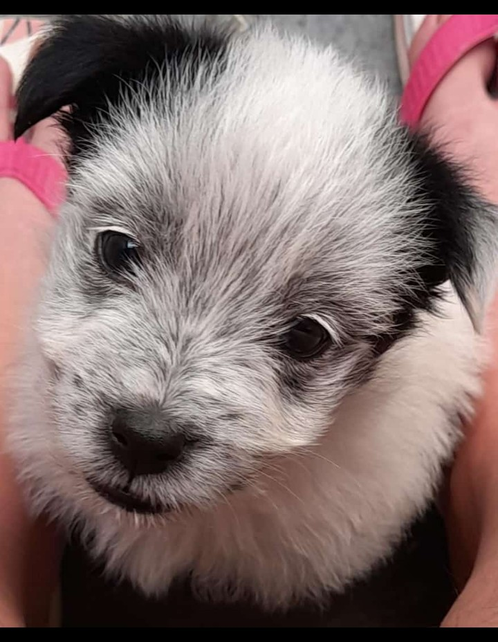
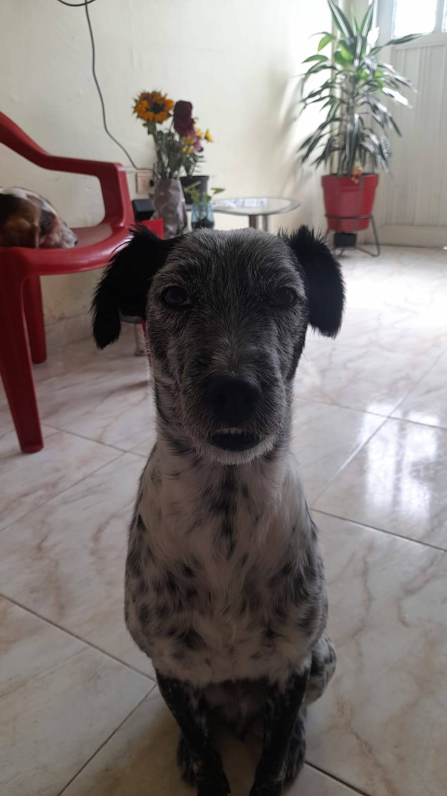
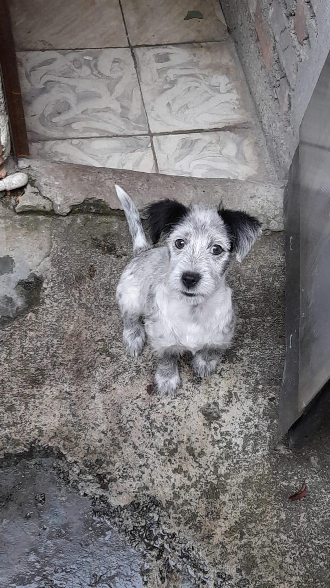

la vida del Bruno Ramón
Bruno Ramón es un perro único y lleno de personalidad, nacido hace tres años. Con una naturaleza inconfundiblemente malgeniada, Bruno es famoso por sus gruñidos y expresiones de desdén, lo que, curiosamente, lo hace aún más adorable para quienes lo conocen.
De pelaje blanco y mechudo, Bruno parece un pequeño ovillo de algodón la mayor parte del tiempo. Sin embargo, su transformación mágica ocurre cada vez que visita la peluquería: de repente, se convierte en un elegante can con manchas que le dan un estilo muy similar al de un dálmata. Esta metamorfosis siempre sorprende a todos, y Bruno, por supuesto, actúa como si no fuera gran cosa.
En casa, Bruno tiene gustos sofisticados. Ama dormir en la cama, donde puede estirarse cómodamente y reclamar el espacio que cree merecer. Su verdadero placer, sin embargo, es la comida: si fuera por él, su dieta consistiría exclusivamente de pollito, su platillo favorito. Bruno Ramón es más que un perro; es un personaje entrañable que combina su actitud gruñona con una dosis de encanto irresistible. Una cosa es segura: este perro sabe cómo dejar huella en el corazón de todos.